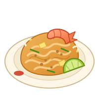
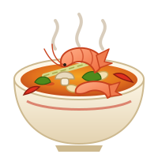
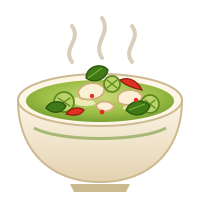
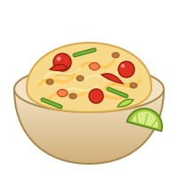
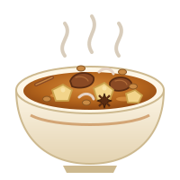
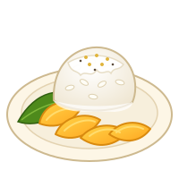
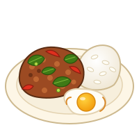
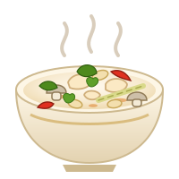

ผัดไทย
Pad Thai
เส้นจันท์ผัดกับไข่ เต้าหู้ ถั่วลิสง และซอสมะขาม
ความเผ็ด: 🌶
ดูส่วนประกอบ →หวาน เปรี้ยว เค็ม เผ็ด และบางครั้งก็ขม รวมอยู่ในมื้อเดียว มารู้จักเมนู อาหารแต่ละภาค และวัตถุดิบเบื้องหลังอาหารที่คนทั่วโลกหลงรัก
ถ้ายังไม่ถูกใจ กดสุ่มใหม่ได้เลย
อาหารไทยไม่ได้เน้นรสใดรสหนึ่ง แต่คือความกลมกล่อม ทุกจานปรับสมดุลหลายรสให้เข้ากัน
น้ำตาลปี๊บและกะทิช่วยลดความเผ็ดและทำให้แกงนุ่มนวล
มะนาว มะขาม และมะม่วงดิบ ให้ความสดชื่นและสดใส
น้ำปลาและกะปิให้รสเค็มกลมกล่อมและอูมามิที่ลึก
พริกสดและพริกแห้งให้ความร้อนแรง ตั้งแต่เผ็ดอ่อนๆ ถึงเผ็ดจัด
แปดเมนูคลาสสิกที่ควรลอง ไม่ว่าจะไปเที่ยวหรือลงมือทำเองที่บ้าน
ไม่พบเมนูที่ตรงกัน ลองเปลี่ยนคำค้นหาหรือระดับความเผ็ด

เส้นจันท์ผัดกับไข่ เต้าหู้ ถั่วลิสง และซอสมะขาม

ซุปกุ้งรสเผ็ดเปรี้ยว หอมตะไคร้ ข่า และใบมะกรูด

แกงกะทิเข้มข้นจากพริกแกงเขียว ใส่มะเขือเปราะและใบโหระพา

ยำมะละกอดิบตำกับมะนาว พริก ถั่วลิสง และกุ้งแห้ง

แกงรสกลมกล่อมไม่เผ็ดมาก ใส่มันฝรั่ง ถั่วลิสง และเครื่องเทศหอมอย่างอบเชย

มะม่วงสุกหวานกินกับข้าวเหนียวมูนราดกะทิ ของหวานสุดคลาสสิก

ผัดใบกะเพรากับเนื้อสับและพริก เสิร์ฟบนข้าวสวยพร้อมไข่ดาว

ไก่ในน้ำซุปกะทิหอมข่า รสเปรี้ยวนำ ซดแล้วอุ่นสบายท้อง
เมนูที่คุณกดหัวใจไว้ จะถูกจำไว้ในเบราว์เซอร์นี้
ยังไม่มีเมนูโปรด กดหัวใจที่เมนูที่ถูกใจได้เลย
รสชาติอาหารไทยเปลี่ยนไปตามแต่ละภาค
รสไม่จัด หอมสมุนไพร กินกับข้าวเหนียว เนื้อย่าง และผักรสขม
แซ่บ เผ็ด เปรี้ยว มีไก่ย่าง ส้มตำ และข้าวเหนียวเป็นหัวใจ
กลมกล่อมและพิถีพิถัน ต้นกำเนิดอาหารชาววังและแกงกะทิเข้มข้น
เผ็ดร้อน อุดมด้วยอาหารทะเล ขมิ้น และกะทิ
สมุนไพรสดและเครื่องปรุงไม่กี่อย่างคือตัวกำหนดรสชาติของอาหารไทย